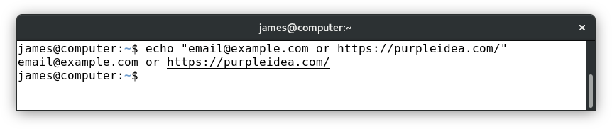
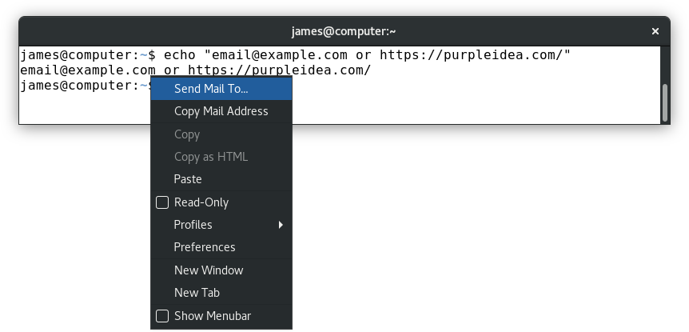
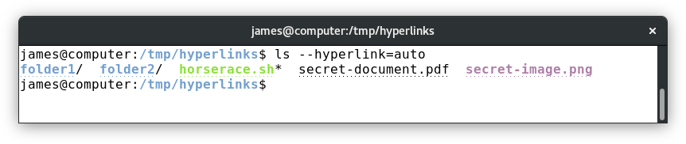
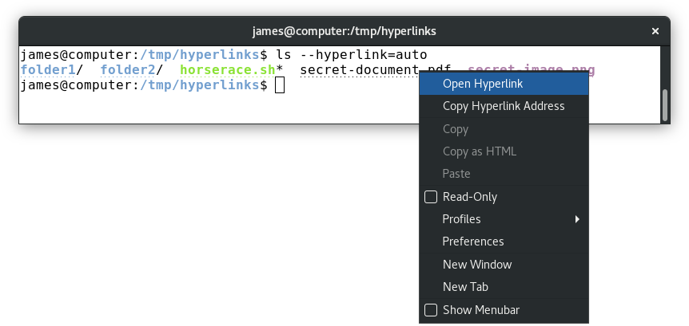
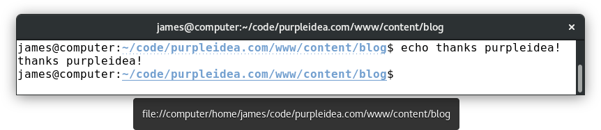

Over the years I’ve learned about many of the advantages of using a modern
terminal and shell. I’m talking about using bash
with GNOME terminal on a modern
GNU/Linux distribution.
I particularly like switching between the terminal and GUI applications. It’s now even better.
Occasionally, some program running in your shell might output what looked like a link:
|  |
| gnome terminal and vte will automatically add links to text that looks like a web hyperlink or an email address |
They can be seen when you hover over them, and a right-click will display a useful context menu:
|  |
| the terminal detected this text sequence as an email address, and the dialog makes it easy to open your MUA |
This was always useful, but detection was always a heuristic. In many situations it might show a hyperlink unnecessarily or omit one that would have been useful.
With recent versions of VTE this is now done properly, without needing a heuristic!
Here’s what it might look like:
|  |
| the ls program can automatically add relevant links |
All this magic works because programs can include magic “escape codes” which tell the shell to do special things. They have been traditionally used to add colours or underlining to shell output. In this case they’re been used to send a special message telling the shell that it might want to hyperlink something.
The venerable ls program was updated to include a --hyperlink option, which,
when active produces the above output. If you look closely, it puts a fine line
of dots over any such link.
I chose to make this automatic, so I’ve added an alias that includes this by default, and other options:
$ alias ls
alias ls='ls -FGh --color=auto --hyperlink=auto'
When you right click on one of the above links, it now shows a helpful menu:
|  |
| this is some magic that opens things in the right program |
I suspect that it uses xdg-open to run the correct program. In my case it
causes folders to open in nautilus, images in eog, and pdf’s in evince.
This isn’t limited to ls. A bunch of other programs have started to add this
feature in various ways. A recent release of systemd has even added support
for this in the systemctl status output.
It’s now time to add useful contextual information to more of the terminal apps
out there. Imagine having a git log with clickable sha1 hashes, or pasted
irssi links which shorten and ellipsize, but which are still clickable? All of
these things are possible, so start getting those patches upstream!
I started to think about if some fancier use cases were possible. Imagine if
running an ls command over ssh could have the hyperlink information modified
by the local shell so that it knew it was a remote URL. In that case, the
terminal might consider converting it to a gvfs
link instead, giving you easy access to remote files.
It might be fun thinking about if adding hyperlinks to vim could offer links
to full screen help dialogs. An even fancier idea might be to include a link to
a trusted execution agent which could open up a GTK+ dialog, and send the
response back to some socket that the program is listening on. The emacs and
mutt users could have an easier way to view graphical email attachments.
As we blur the lines between working in graphical environments and the terminal, power users who aren’t afraid of the shell only get more proficient.
Some of you might remember my earlier,
$PS1, hacks. I’ve
decided to add a little more magic on to it.
In my ~/.bashrc, in my ps1_prompt function, that runs and sets the $PS1 as
part of my PROMPT_COMMAND, I added a little snippet:
# get the url encoded version of URI on each PS1 display
local encoded="$(urlencode 'file://')\h$(urlencode `pwd`)"
local W='\[\033]8;;'"${encoded}"'\a\]''\w''\[\033]8;;\a\]' # thanks purpleidea!
This builds a special hyperlink for the displayed path. I had to use the pwd
hack to get the working directory, because the \w and \W variants both
ellipsize the path, and include the tilde (~), which would disrupt the
expected path format. The URI needs to be safely encoded, and the urlencode
function that I used is:
# urlencode <string>
# TODO: suggestions and improved versions are welcome!
function urlencode() {
local length="${#1}"
for (( i = 0; i < length; i++ )); do
local c="${1:i:1}"
case $c in
[a-zA-Z0-9.~_-]) printf "$c" ;;
*) printf '%s' "$c" | xxd -p -c1 | while read c; do printf '%%%s' "$c"; done ;;
esac
done
}
My full $PS1 now looks like:
# all on a single line w/o newline (this might wrap due to the space at the very end)
PS1="${debian_chroot:+($debian_chroot)}\u@\h:\[\033[01;34m\]${W}\[\033[00m\]${ps1_git}${ps1_status} "
(Please note that some portions of this are not included here. See my earlier PS1 blog posts for more information.)
|  |
| here's a screenshot of what this looks like showing a tooltip on mouseover (the mouse pointer is hidden in this screenshot) |
Now I can click to cause the path to open in nautilus. I previously used the
nautilus .
command to cause this to happen, and while I probably still will to avoid the
context switch-over to the mouse, it’s a nice little addition which I think is
pretty neat. It also gives me some extra material for this article.
If you’d like to understand why there are additional \[ and \] sequences in
the above local W=, that’s because bash needs to know how to wrap the text in
the shell output. It’s not smart enough to know which characters are visible
(and that should take up space) and which ones aren’t, so in order to tell it,
you must wrap the “non-printing”
(invisible) characters with those special open and close sequences so that all
the math works out as intended. If you don’t, you’ll see a weird mess of
characters when you resize your terminal or use tab completion. Remove them and
see for yourself!
Inside each of those sequences of characters, you’ll first see a: \033]8;;
followed by the encoded URL, and then a closing \a in quotes. That’s because
\033 is the magic way to write ESC, and the start code is ESC ]. It all
ends with a BELL character which is an \a. Inside of that we have the magic
number 8, which means that we want to use the hyperlink feature, and it
includes a custom pattern which is that ;; part. This can include a URI to
begin the location of a hyperlink, and omit it inside another magic 8 sequence
to close it. Inside the ;; you can include some special params if needed. For
more information on this, you can review the
ANSI escape codes. Information
about which other applications are tracking this feature is
available here.
Hope you enjoyed this. Hopefully you can add some hyperlink integrations to your application today! Can you think of any other types of magic escape codes we should add?
Thanks to xmby in #bash for helping me understand some of the shell escape code nuances.
Happy Hacking,
James
You can hire James and his team at m9rx corporation.
You can follow James on Mastodon for more frequent updates and other random thoughts.
You can follow James on Twitter for more frequent updates and other random thoughts.
You can support James on GitHub if you'd like to help sustain this kind of content.
You can support James on Patreon if you'd like to help sustain this kind of content.
Your comment has been submitted and will be published if it gets approved.
Click here to see the patch you generated.
{kind=link}
{kind=link}
{kind=link}
{kind=link}
{kind=link}
Comments
Nothing yet.
Post a comment